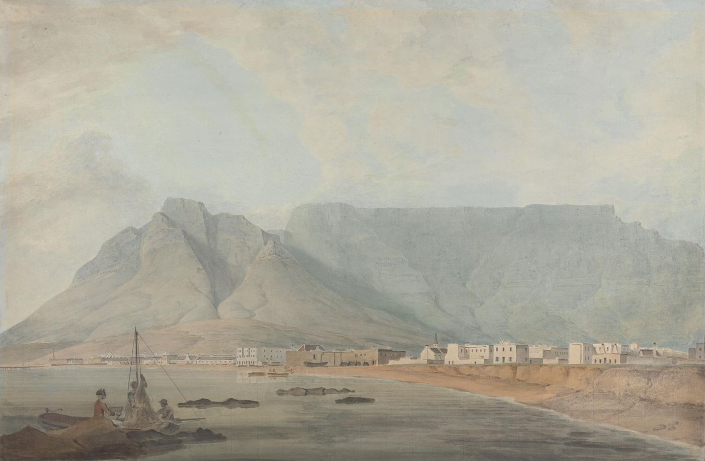

Biography
Simon Tufts, Harvard 1767, was a merchant and a committed Loyalist. He was charged with selling tea, banished, and his estate was confiscated. He died at the Cape of Good Hope on his way home from India.
Service Record
Town: Medford; Boston; Cape Town · Dates: 1750 – 1801
Loyalist. This man sided with the Crown during the Revolution. He is included as part of the family record, not as a Patriot soldier.
Born 7 Apr. 1750 in Medford; died Dec. 1801 at Cape Town, South Africa; Harvard 1767. (Tufts Kinsmen, Vol. I, p. 142, family no. 29-1)
Devout Loyalist, losing his commerce; charged in 1775 by the Boston Committee of Inspection with selling tea, examined, and made a sworn statement that the Committee published. (Tufts Kinsmen, Vol. I, p. 142, family no. 29-1)
Arrested by the Council of Massachusetts in April 1776, proscribed and banished; his estate was forfeited and confiscated in 1778. Returning home from India after the war, he fell sick in port at the Cape of Good Hope. (Tufts Kinsmen, Vol. I, p. 142, family no. 29-1)
Family Connection
Family number 29-1 in Tufts Kinsmen, Vol. I. Parents are not named in the extract seen.
Relatives with profiles on this site: father Dr. Simon Tufts (1727–1786) ; grandfather Dr. Simon Tufts (1700–1747); uncle Dr. Cotton Tufts
; grandfather Dr. Simon Tufts (1700–1747); uncle Dr. Cotton Tufts ; half-brother Turell Tufts.
; half-brother Turell Tufts.
Spouse(s)
Not found in the sources checked (Brooks 1855 Register of Families; Wild; Find a Grave data on file; Tufts Kinsmen Vol. I extract).
Authoritative IDs / Index Numbers
| Source | ID / status |
|---|---|
| Perseus person index (auth=) | auth=tufts,simon. This is a name-level key shared by every Simon Tufts in Perseus, not a personal ID. Use it with the passages cited on this page. |
| Find a Grave memorial | Uncertain: 26903840. Flagged; not used. |
| Brooks, History of Medford (1855) register no. | Checked, no entry confidently matched |
| Tufts Kinsmen, Vol. I family no. | 29-1 |
| Mass. Soldiers and Sailors | Not yet checked for this page |
| DAR ancestor no. | Note: Pending further work. |
| Adams Papers document IDs | ADMS-06-18-02-0162 (editors’ identification) |
| FamilySearch ID | Note: Pending further work. |
| Geni profile | Note: Pending further work. |
| WikiTree ID | Note: Pending further work. |
| Town / vital records | Medford VRs not yet checked by volume and page |
Only IDs confirmed against dates and family are given as matches. “Not yet checked” means the source has not been searched; “Checked, not found” means it was searched without a match.
⚑ Unverified
Not to be confused with Dr. Simon Tufts (11-1). No other source on this site has yet been checked for this man.
Pictures



In the Newspapers
In the autumn of 1774 The Massachusetts Spy carried advertisements for goods “To be SOLD, by SIMON TUFTS, At the Store adjoining Mr. Henry Prentiss, near Faneuil-Hall.” Whether that merchant is this man is Unverified. See Collections.
In the Newspapers
The Boston Gazette lists a Simon Tufts among the Harvard masters of arts in July 1770, and on April 3, 1775 printed a Simon Tufts’s sworn apology for buying tea in breach of the Continental Association. Whether either is this man is Unverified.
See Collections.
Harvard: Possibly class of 1767
A Simon Tufts graduated in 1767. Whether he is this man is Unverified. (Clifford K. Shipton, Sibley’s Harvard Graduates, vol. XVI, pp. 540–542 (sketch location from Andrew W. Pollock’s Index of Graduates; sketch text not seen)) See Harvard College.
The 1786 London Newspaper Affair
In May 1786 Abigail Adams wrote of claims in the English papers by “Lord Gorge Gorden, mr Simon Tufts and mr Lewis Gray” that John Adams was paid by the French ambassador (MHS). The Adams Papers editors call the source “Simon Tufts Jr., a loyalist refugee,” Cotton Tufts’s nephew (Papers of John Adams, vol. 18, p. 312, note. MHS).
⚑ Unverified
That the Simon Tufts of 1786 is this man (1750–1801) is likely but is the editors’ identification.
Links and Resources
Every source, record, map, survey, marker and artifact tied to this person, gathered in one place. Page numbers are given where a book is cited.
Maps, Surveys and Artifacts
- — Cape Town, late 18th century (Samuel Davis). A view of Cape Town by Samuel Davis (1757–1819), Yale Center for British Art. Image: Samuel Davis (Yale Center for British Art). CC0. Source: Wikimedia Com
- Source: Wikimedia Commons — Cape Town, late 18th century (Samuel Davis). A view of Cape Town by Samuel Davis (1757–1819), Yale Center for British Art.Image: Samuel Davis (Yale Center for British Art). CC0.
- Collections — In the autumn of 1774 The Massachusetts Spy carried advertisements for goods “To be SOLD, by SIMON TUFTS, At the Store adjoining Mr. Henry Prentiss, near Faneuil-Hall.” Whether that merchant is this man is Unverified.
- Collections — See Collections .
Markers, Plaques and Places
- Harvard College — A Simon Tufts graduated in 1767. Whether he is this man is Unverified. (Clifford K. Shipton, Sibley’s Harvard Graduates, vol. XVI, pp. 540–542 (sketch location from Andrew W. Pollock’s Index of Graduates; sketch text not seen))
Digitized Books and Journals
- Index of Graduates — A Simon Tufts graduated in 1767. Whether he is this man is Unverified. (Clifford K. Shipton, Sibley’s Harvard Graduates, vol. XVI, pp. 540–542 (sketch location from Andrew W. Pollock’s
Archives, Letters and Records
- In May 1786 Abigail Adams wrote of claims in the English papers by “Lord Gorge Gorden, mr Simon Tufts and mr Lewis Gray” that John Adams was paid by the French ambassador · MHS
- …Tufts and mr Lewis Gray” that John Adams was paid by the French ambassador (MHS). The Adams Papers editors call the source “Simon Tufts Jr., a loyalist refugee,” Cotton Tufts’s nephew (Papers of John Adams, vol. 18, p. 312, note. · MHS